Move List/Bios - Super Nintendo/Sega Genesis (Universal)


")
")


")


")


You can e-mail corrections/additions to The Webmaster
Last updated: 04/07/26
Note: All commands are assuming your character is facing right.
If you are facing left, you must reverse the directional commands.
Backwards becoming Forwards and Vice Versa.
It's recommended that your controls match the default setting.
Key:
U = Up/Jump
D = Down/Crouch
F = Forward/Toward
B = Back/Away
| Universal: HP = High Punch LP = Low Punch HK = High Kick LK = Low Kick BL = Block RN = Run |
Super Nintendo: HP = Y LP = B HK = X LK = A BL = L Trigger RN = R Trigger |
Sega Genesis 3 Pad: HP = (A+B) LP = A HK = (B+C) LK = C BL = B RN = START |
Sega Genesis 6 Pad: HP = X LP = A HK = Z LK = C BL = B RN = Y |
Close Quarters:
Throw: LP (Close)
Head-Blow: HP (Close)
Knee: LK/HK (Close)
Crouched Moves:
Crouched Block: (D+BL)
Crouched Punch: (D+LP)
Uppercut: (D+HP)
Crouched Low Kick: (D+LK)
Crouched High Kick: (D+HK)
Spin Moves:
Foot Sweep: (B+LK)
Roundhouse Kick: (B+HK)
Aerial Moves:
Flying Punch: (U/UF/UB+LP/HP)
Flying Kick: (U/UF/UB+LK/HK)
Babalities & Friendships: You must not press BL in the final round.
Mercy: (Hold RN), D, D, D, (Release RN) (Outside Sweep) Must be executed at the end of the third round. (SNES ONLY)
Stage Fatalities available: The Subway, Bell Tower, Pit 3, Scorpion's Lair.
Finisher Distances Explained:
Close: Right next to your opponent.
Sweep: A couple of steps away (close enough to land a sweep).
Outside Sweep: Just beyond sweep range.
Half Screen: About one jump distance away from your opponent.
Full Screen: As far apart as possible (opponent at the other side of the screen).
Anywhere: Distance doesn't matter, can be any range (outside sweep or further works best).
Note: When (Hold BL) is shown in italics for Fatality inputs, it means that holding BL is optional.
The Fatality will still work without holding BL, though it may be easier if you do.
Just remember to release BL before pressing the final button in the Finisher combo.
CyraxBio:
Cyrax is unit LK-4D4. The second of three prototype cybernetic ninjas built by the Lin Kuei. Like his counterparts, Cyrax's last programmed command is to find and terminate the rogue ninja, Sub-Zero. Without a soul, Cyrax goes undetected by Shao Kahn and
remains a possible threat against his occupation of Earth.
Special Moves:
Green Net: B, B, LK
Close Bomb Toss: (Hold LK), B, B, HK
Far Bomb Toss: (Hold LK), F, F, HK
Teleport: F, D, BL
Air Throw: (Opponent In Air), D, F, BL, (Cyrax Rushes In) LP (Throws)
Finishers:
Fatality 1 - Heli-Chopper: (Hold BL), D, D, U, D, HP (Anywhere)
Fatality 2 - Self-Destruct: (Hold BL), D, D, F, U, RN (Close)
Babality: F, F, B, HP (Anywhere)
Friendship - The Charleston: RN, RN, RN, U (Anywhere)
Brutality: HP, HK, HP, HK, HK, HP, HK, HP, HK,
LK, LP (Close)
Stage Fatality: RN, BL, RN (Close)


ErmacBio:
An enigma to all who come into contact with him, Ermac's past remains shrouded in mystery. It's believed that he exists as a life force brought together by the souls of extinguished Outworld warriors. Shao Kahn has managed to take possession of these souls,
and use them to fight on the side of tyranny.
Special Moves:
Fireball: D, B, LP
Teleport Punch: D, B, HP (Also in Air)
Telekinetic Slam: B, D, B, HK
Finishers: 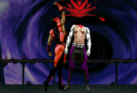 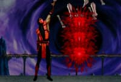 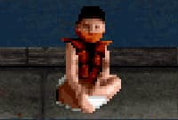
Fatality 1 - Decap Uppercut: RN, BL, RN, RN, HK (Close) [input does not work on SNES UMK3]
Fatality 2 - Telekinetic Massacre: (Hold BL), D, U, D, D, D, (Release BL), BL
(Sweep)
Brutality: HP, HP, LP, BL, HK, LK, BL, HP, LP,
LK, HK (Close)
Stage Fatality: RN, RN, RN, RN, LK (Close)
JadeBio:
When the renegade Princess Kitana makes her escape into the unknown regions of Earth, Jade is appointed by Shao Kahn to bring her back alive. Once a close friend of the princess, Jade is faced with the choice of betraying her friend or disobeying her emperor.
Special Moves:
Razor-Rang: B, F, LP
Razor-Rang (Upwards): B, F, HP
Razor-Rang (Downwards): B, F, LK
Returning Razor-Rang: B, B, F, LP
Shadow Kick: D, F, LK
Projectile Shield: B, F, HK
Finishers: 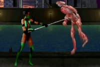 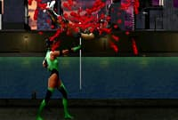 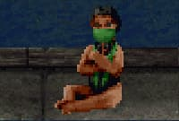 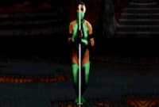
Fatality 1 - Staff Shaker: (Hold BL), U, U, D, F, (Release BL), HP (Close)
Fatality 2 - Staff Impale: RN, RN, RN, BL, RN (Close)
Babality: D, D, F, D, HK (Anywhere)
Friendship - Pogo Stick: B, D, B, B, HK (Anywhere)
Brutality: HP, LK, HP, LP, HK, HK, LK, BL, BL,
HP, HK (Close)
Stage Fatality: B, F, D, RN (Close)
JaxBio:
After failing to convince his superiors of the coming Outworld menace, Jax begins to covertly prepare for future battle with Kahn's minions. He outfits both arms with indestructible bionic implants. This is a war Jax is prepared to win.
Special Moves:
Single Missile: B, F, HP
Double Missiles: F, F, B, B, HP
Gotcha Grab: F, F, LP (Tap LP Rapidly for more punches)
Quad Slam: (Tap HP Rapidly, while throwing your opponent)
Ground Pound: (Hold LK 3 sec.), (Release LK)
Backbreaker: BL (In Air, Close)
Dash Punch: F, F, HK
Finishers:
Fatality 1 - Slice 'em Up: (Hold BL), U, D, F, U, (Release BL) (Close)
Fatality 2 - Giant Boot: RN, BL, RN, RN, LK (Half Screen-Full Screen)
Babality: D, D, D, LK (Anywhere)
Friendship - Jump Rope: LK, RN, RN, LK (Anywhere)
Brutality: HP, HP, HP, BL, LP, HP, HP, HP, BL,
LP, HP (Close)
Stage Fatality: D, F, D, LP (Close)


KabalBio:
As a Chosen Warrior, his identity is a mystery to all. It is believed that he is the survivor of an attack by Shao Kahn's extermination squads. As a result, he is viciously scarred and kept alive only by artificial respirators and a rage for ending Shao
Kahn's conquest.
Special Moves:
Plasma Blast: B, B, HP (Also in Air)
Nomad Dash: B, F, LK
Ground Saw: B, B, B, RN
Finishers:
Fatality 1 - Head Inflate: D, D, B, F, BL (Sweep-Half Screen)
Fatality 2 - Heart Attack: RN, BL, BL, BL, HK (Close)
Babality: RN, RN, LK (Anywhere)
Friendship - Marshmallow: RN, LK, RN, RN, U (Anywhere)
Brutality: HP, BL, LK, LK, LK, HK, LP, LP, LP,
HP, LP (Close)
Stage Fatality: BL, BL, HK (Close)


KanoBio:
Kano is thought to have been killed in the first tournament. Instead, he's found alive in the Outworld, where he once again escapes capture by Sonya. Before the actual Outworld invasion, Kano convinces Shao Kahn to spare his soul. Kahn needs someone to
teach his warriors how to use Earth's weapons. Kano is the man to do it.
Special Moves:
Knife Throw: D, B, HP
Cannonball: (Hold LK 3 sec.), (Release LK)
Knife Swipe: D, F, HP
Chokehold: D, F, LP
Air Throw: BL (In Air, Close)
Upwards Cannonball: F, D, F, HK
Finishers:
Fatality 1 - Skeleton Rip: (Hold LP), F, D, D, F, (Release LP) (Close)
Fatality 2 - Eye Laser: LP, BL, BL, HK (Outside Sweep)
Babality: F, F, D, D, LK (Anywhere)
Friendship - Bubblegum: LK, RN, RN, HK (Anywhere)
Brutality: HP, LP, BL, LP, HP, BL, HK, LK,
BL, HK, LK (Close)
Stage Fatality: (Hold BL), U, U, B, LK (Close)


KitanaBio:
Kitana is accused of treason by the high courts of the Outworld after murdering her evil twin, Mileena. Shao Kahn appoints a group of warriors specifically to catch his daughter and bring her back alive. But Kitana must find a way to reach the newly crowned
Queen Sindel first and warn her of their true past.
Special Moves:
Fan Throw: F, F, (LP+HP) (Also in Air)
Fan Lift: B, B, B, HP
Square Wave Punch: D, B, HP
Finishers: 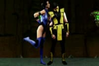 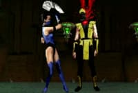 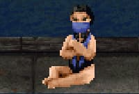 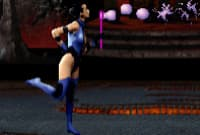
Fatality 1 - Kiss of Death: RN, RN, BL, BL, LK (Close)
Fatality 2 - Fan Decap: B, D, F, F, HK (Close)
Babality: F, F, D, F, HK (Anywhere)
Friendship - Bubbles: D, B, F, F, LP (Anywhere)
Brutality: HP, HP, BL, HK, BL, LK, BL, LP,
BL, HP, BL (Close)
Stage Fatality: F, D, D, LK (Close)
Kung LaoBio:
Kung Lao's plan to reform the White Lotus Society comes to a halt when Shao Kahn's invasion takes the Earth by storm. As a Chosen Warrior, Kung Lao must use his greatest fighting skills to bring down Shao Kahn's reign of terror.
Special Moves:
Hat Throw: B, F, LP
Teleport: D, U (HP/HK to attack after)
Dive Kick: (D+HK) (In air)
Whirlwind Spin: F, D, F, RN, (Tap RN Rapidly to Keep Spinning)
Finishers:
Fatality 1 - Hat Slice: F, F, B, D, HP (Close-Sweep)
Fatality 2 - Spin Cycle: RN, BL, RN, BL, D (Anywhere)
Babality: D, F, F, HP (Anywhere)
Friendship - Go Fetch: RN, LP, RN, LK (Anywhere)
Brutality: HP, LP, LK, HK, BL, HP, LP, LK, HK,
BL, HP (Close)
Stage Fatality: D, D, F, F, LK (Close)


Liu KangBio:
After the Outworld invasion, Liu Kang finds himself the prime target of Kahn's extermination squads. He is the Shaolin Champion and has thwarted Kahn's schemes in the past. Of all the humans, Kang poses the greatest threat to Shao Kahn's rule.
Special Moves:
High Fireball: F, F, HP (Also in Air)
Low Fireball: F, F, LP
Flying Kick: F, F, HK
Bicycle Kick: (Hold LK 4 sec.), (Release LK)
Finishers:
Fatality 1 - Fire Chi: F, F, D, D, LK (Anywhere)
Fatality 2 - Arcade Drop: (Hold BL), U, D, U, U, (Release BL), (BL+RN)
(Anywhere)
Babality: D, D, D, HK (Anywhere)
Friendship - Shadow Puppet: RN, RN, RN, (D+RN) (Anywhere)
Brutality: HP, LP, HP, BL, LK, HK, LK, HK, LP,
LP, HP (Close)
Stage Fatality: RN, BL, BL, LK (Close)


MileenaBio:
Murdered by her twin sister Kitana, Mileena finds herself brought back to life by Shao Kahn himself. Her skills as a vicious fighter will be needed to defeat Earth's chosen warriors. Her ability to read the thoughts of her twin sister will enable Kahn
to stay one step ahead.
Special Moves:
Sai Throw: (Hold HP 2 sec.), (Release HP) (Also in Air)
Teleport Kick: F, F, LK
Ground Roll: B, B, D, HK
Finishers: 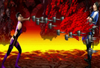 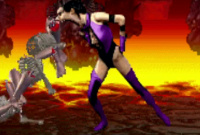 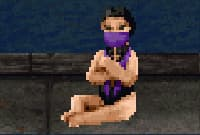 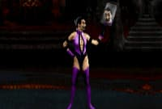
Fatality 1 - Nail Spitter: B, B, B, F, LK (Full Screen)
Fatality 2 - Man-Eater: D, F, D, F, LP (Close)
Babality: D, D, F, F, HP (Anywhere)
Friendship - Mirror: D, B, F, HP (Anywhere)
Brutality: HP, LP, LP, HP, BL, HK, LK, HK, BL,
HP, LP (Close)
Stage Fatality: D, D, D, LP (Close)
NightwolfBio:
Nightwolf works as a historian and preserver of his people's culture. When Kahn's Portal opens over North America, Nightwolf uses the magics of his shaman to protect his tribe's sacred land. This area becomes a vital threat to Kahn's occupation of Earth.
Special Moves:
Spirit Arrow: D, B, LP
Tomahawk Swipe: D, F, HP
Shoulder Charge: F, F, LK
Projectile Reflector: B, B, B, HK
Finishers:
Fatality 1 - Spirit Light: (Hold BL), U, U, B, F, (Release BL), BL (Close)
Fatality 2 - Lightning Summon: B, B, D, HP (Half Screen)
Babality: F, B, F, B, LP (Anywhere)
Friendship - Raiden Transformation: RN, RN, RN, D (Half Screen-Full Screen)
Brutality: HP, HP, HK, LK, LK, BL, BL, LP, LP,
HP, HK (Close)
Stage Fatality: RN, RN, BL (Close)


Noob SaibotBio:
Noob Saibot emerges from the darkest region of reality - a region known as the Netherrealm. He belongs to a group called the Brothers of the Shadow, and worships an evil and mysterious fallen elder god. His mission is to spy on the events taking place
in the battle between the realms and report back to his enigmatic leaders.
Special Moves:
Disabler Fireball: D, F, LP (Temporarily Disables Block)
Teleport Slam: D, U (Follow up with an Uppercut for one massive attack)
Shadow Throw: F, F, HP
Finishers:
Babality: F, F, F, LP (Anywhere) (SNES ONLY)
Brutality: HP, LK, LP, BL, LK, HK, HP, LP, BL,
LK, HK (Close)
Stage Fatality: D, F, BL (Close) (SNES ONLY)

RainBio:
Born in Kitana's former world of Edenia, Rain was smuggled away from the realm as a small child shortly after Shao Kahn's takeover. Thousands of years later he resurfaced, his allegiance belonging to Kahn. He chose to betray his homeland rather than suffer
at the hands of Kahn's extermination squads.
Special Moves:
Control Orb: D, F, HP (Move opponent with D-Pad)
Lightning Lift: B, B, HP
Super Roundhouse Kick: (B+HK)
Finishers: 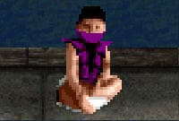
Babality: F, B, B, HP (Anywhere) (SNES ONLY)
Brutality: HP, HP, BL, LK, HK, BL, LK, HK,
BL, HP, LP (Close)
Stage Fatality: F, D, F, LK (Close) (SNES ONLY)
ReptileBio:
Always a reliable servant to Shao Kahn, Reptile is chosen to assist Jade in the capture of Kitana. In contrast to Jade's instructions, Reptile is ordered to stop the renegade Princess at all costs... even if it means her death.
Special Moves:
Acid Spit: F, F, HP
Slow Forceball: B, B, (LP+HP)
Fast Forceball: F, F, (LP+HP)
Slide: (B+LP+LK+BL)
Invisibility: (Hold BL), U, D, HK
Reverse Elbow: B, F, LK
Finishers: 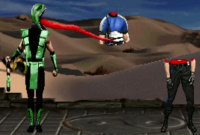 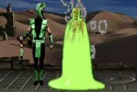 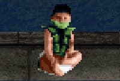 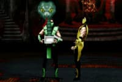
Fatality 1 - Yummy!: B, F, D, BL (Half Screen)
Fatality 2 - Acid Puke: (Hold BL), F, F, U, U, (Release BL), HK (Sweep)
Babality: F, F, B, D, LK (Anywhere)
Friendship - Snake in the Box: D, F, F, B, HK (Close)
Brutality: HP, BL, HK, HK, BL, HP, LP, LK, LK,
BL, LP (Close)
Stage Fatality: BL, RN, BL, BL (Close)
ScorpionBio:
When Shao Kahn makes a failed attempt at stealing the souls that occupy Earth's hell, Scorpion is able to escape from the Netherrealm. Free to roam the Earth once more, Scorpion holds allegiance with no one. He's a wild card in the Earth's struggle against
the Outworld.
Special Moves:
Spear: B, B, LP
Teleport Punch: D, B, HP (Also in Air)
Air Throw: BL (In Air, Close)
Finishers: 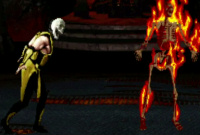 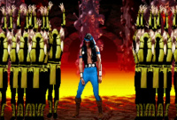 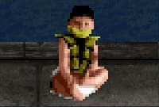 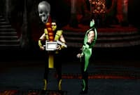
Fatality 1 - Toasty!: (Hold BL), D, D, U, (Release BL), HK (Half Screen)
Fatality 2 - Annihilation: (Hold BL), F, F, D, U, (Release BL), RN (Close)
Babality: D, B, B, F, HP (Anywhere)
Friendship - Skull in the Box: B, F, F, B, LK (Close)
Brutality: HP, HP, BL, HK, HK, LK, HK, HP, HP,
LP, HP (Close)
Stage Fatality: (Hold BL), F, U, U, (Release BL), LP (Close)
SektorBio:
Sektor is actually the code name for unit LK-9T9. He was the first of three prototype cybernetic ninjas built by the Lin Kuei. Sektor was once a human assassin trained by the Lin Kuei. He volunteered for automation because of his loyalty for the clan.
Sektor survives the Outworld invasion - he has no soul to take.
Special Moves:
Missile: F, F, LP
Homing Missile: F, D, B, HP
Teleport Uppercut: F, F, LK (Also in Air)
Finishers:
Fatality 1 - Compactor: LP, RN, RN, BL (Sweep)
Fatality 2 - Flamethrower: F, F, F, B, BL (Half Screen)
Babality: B, D, D, D, HK (Anywhere)
Friendship - Hammer Time: RN, RN, RN, RN, D (Half Screen-Full Screen)
Brutality: HP, HP, BL, BL, HK, HK, LK, LK, LP,
LP, HP (Close)
Stage Fatality: RN, RN, RN, D (Close)


Shang TsungBio:
Shang Tsung is Shao Kahn's lead sorcerer. He once fell out of favor with his emperor after failing to win the Earthrealm through tournament battle. But the ever-scheming Shang Tsung is instrumental in Kahn's conquest of Earth. He has now been granted more
power than ever.
Special Moves:
Single Flaming Skull: B, B, HP
Double Flaming Skulls: B, B, F, HP
Triple Flaming Skulls: B, B, F, F, HP
Volcanic Triple Skulls: F, B, B, LK
Morphs:
Cyrax: BL, BL, BL
Ermac: D, D, U
Jade: F, F, D, (D+BL)
Jax: F, F, D, LP
Kabal: LP, BL, HK
Kano: B, F, BL (Quickly)
Kitana: F, D, F, RN
Kung Lao: RN, RN, BL, RN
Liu Kang: (Hold BL), F, D, B, U, F
Mileena: R, BL, HK
Nightwolf: U, U, U
Noob Saibot: F, D, D, B, HK (Gen Only)
Rain: RN, BL, LK (Gen Only)
Reptile: RN, BL, BL, HK
Scorpion: D, D, F, LP
Sektor: D, F, B, RN
Sindel: B, D, B, LK
Smoke (Cyborg): F, F, LP
Sonya: (D+LP+BL+RN)
Stryker: F, F, F, HK
Sub-Zero (Classic): BL, BL, RN, RN
Sub-Zero (Unmasked): F, D, F, HP
Finishers:
Fatality 1 - Bed of Nails: (Hold LP), D, F, F, D, (Release LP) (Close)
Fatality 2 - Soul Steal: (Hold LP), RN, BL, RN, BL, (Release LP) (Close)
Babality: RN, RN, RN, LK (Anywhere)
Friendship - Joust: LK, RN, RN, D (Anywhere)
Brutality: HP, BL, BL, BL, LK, HP, LP, LP,
BL, BL, BL (Close)
Stage Fatality: (Hold BL), U, U, B, LP (Close)


SindelBio:
She once ruled the Outworld at Shao Kahn's side as his queen. Now 10,000 years after her untimely death, she is reborn on Earth. Her evil intent is every match for Shao Kahn's tyranny. She is the key to his occupation of Earth.
Special Moves:
Fireball: F, F, LP
Banshee Scream: F, F, F, HP
Levitate: B, B, F, HK (Press BL to land)
Air Fireball: D, F, LK (In air)
Finishers:
Fatality 1 - Split Ends: RN, RN, BL, RN, BL (Sweep)
Fatality 2 - Banshee Screech: RN, BL, BL, (BL+RN) (Close)
Babality: RN, RN, RN, U (Anywhere)
Friendship - Field Goal: RN, RN, RN, RN, RN, U (Anywhere)
Brutality: HP, BL, LK, BL, LK, HK, BL, HK,
LK, BL, LP (Close)
Stage Fatality: D, D, D, LP (Close)


Smoke (Cyborg)Bio:
Smoke, unit LK-7T2, is the third prototype cyber-ninja built by the Lin Kuei. He tried to escape the automation process with Sub-Zero but was captured. His memories were stripped away, leaving behind an emotionless killer. However, Sub-Zero believes that
within this machine is a human soul trying to escape.
Special Moves:
Spear: B, B, LP
Teleport Uppercut: F, F, LK (Also in Air)
Invisibility: (Hold BL), U, U, RN
Air Throw: BL (In Air, Close)
Finishers:
Fatality 1 - Armageddon: (Hold BL), U, U, F, D (Half Screen-Full Screen)
Fatality 2 - Smoke Bomb: (Hold BL+RN), D, D, F, U (Sweep)
Babality: D, D, B, B, HK (Anywhere)
Friendship - Foghorn: RN, RN, RN, HK (Half Screen-Full Screen)
Brutality: HP, LK, LK, HK, BL, BL, LP, LP, HP,
BL, BL (Close)
Stage Fatality: F, F, D, LK (Close)


SonyaBio:
Sonya disappeared after the first tournament but was later rescued from the Outworld by Jax. After returning to Earth, she and Jax tried to warn the U.S. Government of the looming Outworld menace. Lacking proof, they watch helplessly as Shao Kahn begins
his invasion.
Special Moves:
Energy Rings: D, F, LP
Leg Grab: (D+LP+BL)
Square Wave Punch: F, B, HP
Rising Bicycle Kick: B, B, D, HK
Finishers:
Fatality 1 - Flame Kiss: B, F, D, D, RN (Anywhere)
Fatality 2 - Purple Haze: (Hold BL+RN), U, U, B, D, (Half Screen-Full Screen)
Babality: D, D, F, LK (Anywhere)
Friendship - Swing Arms: B, F, B, D, RN (Anywhere)
Brutality: HP, LK, BL, HP, LK, BL, HP, LP,
BL, HK, LK (Close)
Stage Fatality: F, F, D, HP (Close)


StrykerBio:
When the Outworld Portal opens over a large city in North America, panic and chaos rage out of control. Kurtis Stryker was the leader of a riot control brigade when Shao Kahn began taking souls. He finds himself the lone survivor of a city once populated
by millions.
Special Moves:
Low Grenade: D, B, LP
High Grenade: D, B, HP
Baton Trip: F, B, LP
Baton Throw: F, F, HK
Rapid Fire Gun: B, F, HP
Finishers:
Fatality 1 - Explosives: D, F, D, F, BL (Close)
Fatality 2 - Tazer: F, F, F, LK (Full Screen)
Babality: D, F, F, B, HP (Anywhere)
Friendship - Crossing Guard: LP, RN, RN, LP (Anywhere)
Brutality: HP, LP, HK, LK, HP, LP, LK, HK, HP,
LK, LK (Close)
Stage Fatality: (Hold BL), F, U, U+HK (Close)


Sub-Zero (Unmasked)Bio:
The ninja returns unmasked. He was betrayed by his own ninja clan - the Lin Kuei. He broke sacred codes of honor by leaving the clan and is marked for death. But unlike the ninja of old, his pursuers come as machines. He must not only defend against the
Outworld menace, but must also elude his soulless assassins.
Special Moves:
Freeze: D, F, LP
Slide: (B+LP+LK+BL)
Ice Clone: D, B, LP (Also in Air)
Ice Shower: D, F, HP
Ice Shower - Front: D, F, B, HP
Ice Shower - Behind: D, B, F, HP
Finishers:
Fatality 1 - Overhead Ice Shatter: BL, BL, RN, BL, RN (Close)
Fatality 2 - Frosty!: B, B, D, B, RN (Outside Sweep)
Babality: D, B, B, HK (Anywhere)
Friendship - Snowman: LK, RN, RN, U (Anywhere)
Brutality: HP, LK, HK, LP, HP, HK, HK, HP, HP,
LP, HP (Close)
Stage Fatality: B, D, F, F, HK (Close)


Sub-Zero (Classic)Bio:
Thought to have been vanquished in the Shaolin Tournament, Sub-Zero mysteriously returns. It's believed this secretive member of the Lin Kuei, a legendary clan of Chinese "ninjas", has returned to again attempt an assassination of Shang Tsung. To do so,
he must fight his way through Shao Kahn's tournament.
Special Moves:
Freeze: D, F, LP
Slide: (B+LP+LK+BL)
Ground Freeze: D, B, LK
Finishers: 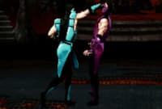 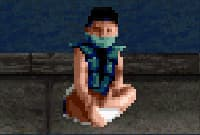
Fatality 1 - Censored Spine Rip: D, D, D, F, HP (Close)
Brutality: HP, LP, HP, BL, LK, LK, HK, HK, LP,
HP, LP (Close)
Stage Fatality: F, D, F, F, HP (Close)
 Smoke (Human) (Hidden/Unlockable)
Smoke (Human) (Hidden/Unlockable)Bio:
In his human form, Smoke was a lethal assassin working for the Lin Kuei. But when they decide to automate their ninjas, Smoke is caught in the middle. He became a cyborg assassin, whose human form would exist as a memory forever more.
Special Moves:
Spear: B, B, LP
Teleport Punch: D, B, HP (Also in Air)
Air Throw: BL (In Air, Close)
Finishers: 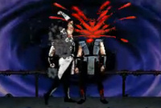 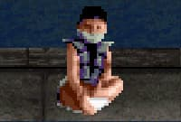
Fatality 1 - Decap Uppercut: RN, BL, RN, RN, HK (Close)
Babality: D, B, B, F, HP (Anywhere)
Brutality: HP, HP, BL, LK, HK, HP, HK, HP, HK,
LP, LK (Close)
Stage Fatality: (Hold BL), F, U, U, (Release BL), LP (Close)
Fight (Human) Smoke:
During a 2-Player VS Match, use the Kombat Kode 205-205.
The winner of the match fights (Human) Smoke.
Play as (Human) Smoke:
SNES Version:
Choose Cyber-Ninja Smoke as a character.
Hold (B+HP+HK+BL+RN) before the "Fight" screen appears or between rounds.
Cyber Smoke will explode and change into Human Smoke.
Sega Genesis Version:
Choose Cyber-Ninja Smoke as a character.
Hold (LP+HP+LK+HK) before the "Fight" screen appears or between rounds.
Cyber Smoke will explode and change into Human Smoke.
Motaro (Sub-Boss)Bio:
In the realm of the Outworld, Motaro's race of Centaurians has long since come into conflict with the Shokan. When Shao Kahn formed special extermination squads to eliminate the chosen warriors of Earth, Motaro was appointed to head this elite group of
savage warriors.
Special Moves:
Fireball (SNES): F, D, B, HP / D, B, HP (Gen)
Grab and Punch: F, F, LP
Teleport: D, U
Fight Motaro:
Work your way up the tournament brackets. Motaro will be next to last if you make it that far...
During a 2-Player VS Match, use the Kombat Kode 969-141.
The winner of the match fights Motaro.
Play as Motaro:
SNES Version:
At Start/Options screen, press " , B, A,
, B, A,  ,
,
 , Y". Unlocks "Kooler Stuff".
, Y". Unlocks "Kooler Stuff".
Motaro can be activated there for VS Mode use.
Sega Genesis Version:
On the main menu press "C,  , A,
, A,  , A,
, A,
 , C,
, C,  , A,
, A,
 , A,
, A,  ".
".
Unlocks "Killer Codes".
Motaro can be activated there.
Shao Kahn (Boss)Bio:
Many decades ago, Shao Kahn rose to power in the Outworld, usurping the realm from Kitana's parents and taking Queen Sindel for his bride. Then she died. Now, centuries later, Sindel is reborn. And since Shang Tsung failed to win the Earthrealm through
Mortal Kombat I and II, her rebirth is the means by which Kahn will finally seize the planet forever unless...
Special Moves:
Fireball: B, B, F, LP
Shoulder Charge: F, F, LP
Rising Charge: F, F, HP
Hammer Smash: B, F, HP
Taunt: D, D, LK
Laugh: D, D, HK
Fight Shao Kahn:
Shao Kahn will be the last opponent you have to battle in this 3rd tournament. Beating him means freeing the Earthrealm from his vengeance. But to get there you must beat a number of worthy opponents, and then the fierce Motaro before you can take the
big man on. Good luck, Earth is counting on you...
During a 2-Player VS Match, use the Kombat Kode 033-564.
The winner of the match fights Shao Kahn.
Play as Shao Kahn:
SNES Version:
At Start/Options screen, press "B, A,  ,
,  ,
,
 , A, X, B, A, B, Y".
, A, X, B, A, B, Y".
Unlocks "Scott's Stuff".
Shao Kahn can be activated there for VS Mode use.
Sega Genesis Version:
On the main menu press "C,  , A,
, A,  , A,
, A,
 , C,
, C,  , A,
, A,
 , A,
, A,  ".
".
Unlocks "Killer Codes".
Shao Kahn can be activated there.